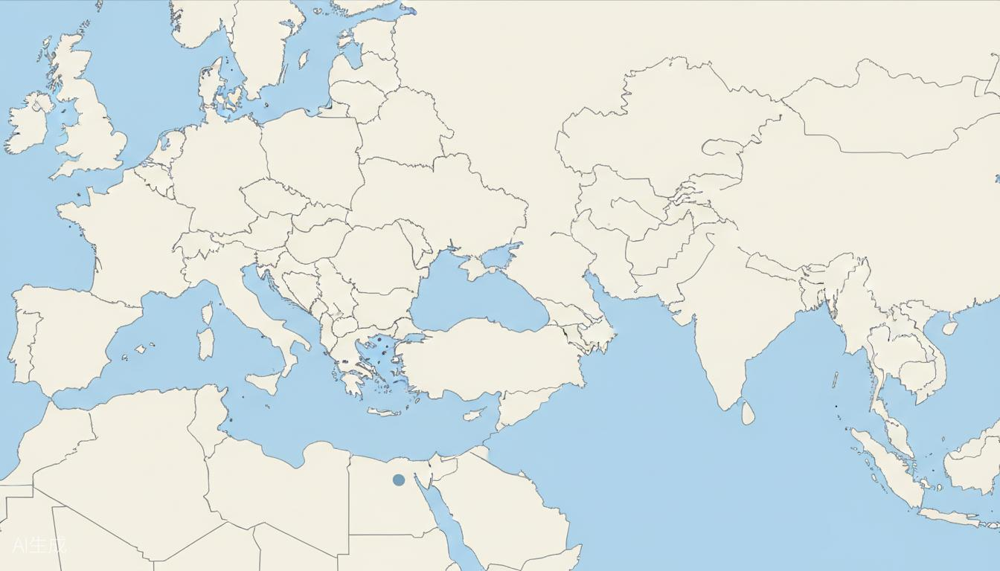

ST意法半导体深度解析
ST是你在欧洲最重要的客户。深入了解ST的组织架构、技术战略、6个全球制造基地的布局和采购决策流程，是开展一切销售活动的基础。

课程目录
ST公司概况与组织架构
STMicroelectronics（NYSE: STM）是全球领先的半导体IDM公司，总部位于瑞士日内瓦（Geneva），2024年营收约161亿美元，全球员工约50,000人，拥有18,000+项专利。
你需要对接的部门
1. Front-End Manufacturing（前道制造）
- 各Site的Manufacturing/Operations部门
- 负责晶圆投片决策和生产排程
- 你的硅片直接使用者
2. Strategic Procurement（战略采购）
- 位于Geneva的中央采购团队
- 负责供应商审核、合同谈判、价格决策
- 通常按Category划分（Raw Materials, Equipment等）
3. Quality Assurance（质量保证）
- Incoming Quality Control (IQC)
- Supplier Quality Engineering (SQE)
- 负责供应商On-site Audit
4. R&D / Technology Development
- 位于Crolles的Central R&D
- 负责先进工艺开发和新材料导入
- 对硅片Spec有关键话语权
5. Finance
- Payment Terms negotiation
- Annual Price Review
关键决策链
Site-level RFQ → Central Procurement RFP → Technical Review (R&D+Quality) → Supplier Selection Committee → Contract Award
ST的采购体系非常decentralized，各Site有一定自主权，但Strategic Contract由Geneva统一谈。记住这一点，不要在Site承诺Geneva才能决定的事情。
ST全球Fab分布与技术路线
ST拥有全球布局的制造基地，你需服务的6个Site分布在法国、意大利和新加坡。每个Site有不同的产品侧重和技术路线。
法国（France）
Rousset（普罗旺斯）
- 主要产品：模拟/功率IC、MCU
- 工艺节点：0.35μm - 130nm BCD
- 特色：BCD（Bipolar-CMOS-DMOS）工艺先驱
- 硅片需求：200mm P型硅片，BCD工艺专用
Crolles（格勒诺布尔附近）
- 主要产品：先进逻辑、FD-SOI
- 工艺节点：28nm, 18nm FD-SOI
- 核心地位：ST最先进逻辑工艺研发中心
- 合作伙伴：与GlobalFoundries共享部分产能
- 硅片需求：300mm EPI硅片，需求量最大
Tours（图尔）
- 主要产品：功率MOSFET、IGBT
- 特色：封装测试为主，也有前道
- 硅片需求：相对较小
意大利（Italy）
Agrate（米兰附近）
- 主要产品：MEMS传感器、功率IC、MCU
- 工艺节点：0.35μm - 90nm
- 特色：ST在意大利最大的综合性基地
- 硅片需求：SOI硅片（MEMS用）
Catania（西西里岛）
- 主要产品：SiC MOSFET、SiC二极管
- 核心地位：全球SiC/GaN功率器件的标杆工厂
- 增长：SiC业务年增速50%+
- 合作伙伴：与Cree/Wolfspeed合作紧密
- 硅片需求：SiC衬底（Substrate），需求爆发式增长
新加坡（Singapore）
AMK（Ang Mo Kio）
- 主要产品：NOR Flash、模拟IC
- 工艺节点：90nm - 40nm
- 定位：面向亚太市场的制造枢纽
Catania工厂目前是ST增长最快的Site，SiC业务年增速50%+，是你最有机会的突破口。Crolles的300mm EPI需求也很大，但日系供应商根基深。
ST的供应商管理体系
进入ST供应商名单需要经过严格流程。了解这个流程，提前准备，能大幅缩短准入时间。
供应商审核流程
1. Pre-qualification Survey
- 公司背景、产能、质量体系问卷
- 通常由Procurement发起
2. On-site Audit
- ST SQE团队到工厂实地考察
- 审核内容：质量体系（ISO/TS 16949）、制程能力、设备状态、ESD防护、洁净室等级
- 审核周期：1-2天
3. Sample Qualification
- 提供A Sample（工程样品）
- ST IQC进行incoming inspection
- Fab进行试投片（Pilot Run）
- 良率验证（Yield Verification）
4. PSW（Part Submission Warrant）
- 类似汽车行业的PPAP
- 提交完整文件包
5. 小批量试产 → 大批量量产
供应商分级体系
- Preferred Supplier：优先供应商，最高配额
- Approved Supplier：合格供应商
- Conditional Supplier：有条件使用
- Disqualified：淘汰
年度审核机制
- Annual Business Review (ABR)
- Score Card评分（Quality/Delivery/Price/Service）
- Corrective Action Request (CAR) 处理时效
第一次Audit至关重要，建议提前做内部模拟审核，确保ESD和洁净室管理达标。准备充分可以通过一次Audit拿到Approved Supplier级别。
跨文化商务沟通
从国内销售到海外销售，最大的挑战不是产品知识，而是文化差异。了解每个国家的商务文化、沟通风格和社交禁忌，是建立信任的第一步。
| 维度 | 法国 | 意大利 | 新加坡 |
|---|---|---|---|
| 决策速度 | 慢（层级审批） | 慢（关系优先） | 快（数据驱动） |
| 时间管理 | 灵活（午餐神圣） | 很灵活 | 严格（准时） |
| 沟通风格 | 直接但外交 | 间接、关系导向 | 间接/直接 |
| 关系建立 | 中等（需尊重） | 极度重要 | 效率优先 |
| 禁忌话题 | 与德国比较 | 黑手党/南北比较 | 种族/宗教/政治 |
| 晚餐文化 | 不聊工作 | 关系黄金时间 | 高效随意 |
课程目录
法国商务文化与沟通策略
法国是ST总部所在国，也是你在欧洲最重要的商务目的地。法国企业等级分明，决策需要层层上报，不要期望一线工程师能快速拍板。
核心文化特征
- La France Profonde（深层法国）：法国人对自己的文化极度自豪，商务交流中尊重法国文化能快速拉近距离
- Hierarchie（等级制）：决策通常需要层层上报，一线工程师没有拍板权
- Intellectualism：重视理论、逻辑和辩论，展现深度思考比单纯推销更受尊重
见面礼仪
- 初次见面：握手（Poignee de main），眼神接触，说"Bonjour/Enchanté"
- 熟悉后：La Bise（贴面礼），但职场初期建议等对方主动
- 称呼：用"Monsieur/Madame + 姓氏"，切勿直接用名字（除非对方要求）
- 英语：年轻工程师英语不错，管理层可能偏好法语，重要会议可带翻译
会议文化
- 午餐时间（12:00-14:00）神圣不可侵犯，绝不要安排会议
- 8月是全法国度假月，基本无法推进商务
- 会议开始通常会闲聊（la parole en l'air），不要着急进入正题
- 法国人欣赏"Contrarian thinking"，适度提出不同意见反而加分
沟通风格
- Direct but diplomatic：直接但有外交辞令，不会明说"No"
- "Ce n'est pas evident"（这不简单）→ 实际上是委婉的拒绝
- 邮件正式且详尽，开头要有礼貌问候语，结尾要有完整签名
三个法国Site的特别注意事项
- Rousset：普罗旺斯氛围，午餐文化浓厚，周五下午轻松
- Crolles：R&D氛围浓，阿尔卑斯山区，工程师偏好技术讨论
- Tours：规模较小，卢瓦尔河谷地区，节奏较慢
不要拿法国与德国比较（尤其不要说德国效率更高）
不要在晚餐时聊工作
不要忽视Dress Code（Business Casual起步，高级别会议穿西装）
不要打断别人说话
学会几句法语问候（Bonjour, Merci, Au revoir）能极大加分，哪怕你英语说得很好。去法国前了解一下当地的美食和葡萄酒，是很好的破冰话题。
意大利商务文化与西西里岛特别指南
意大利是ST第二大制造基地所在国，Catania工厂的战略地位日益重要。意大利文化以关系（Relazioni）至上，没有信任基础很难推进业务。
核心文化特征
- Relazioni（关系）至上：意大利人做生意极度依赖个人关系，没有信任基础很难推进
- La Bella Figura（好形象）：外在形象（穿着、车子、手表）在社交中很重要
- Flessibilita（灵活性）：意大利人对时间、规则的态度比德国法国灵活很多，计划经常变
意大利北部（Agrate/Milan地区）
- 米兰是意大利商务中心，节奏较快，国际化程度高
- 英语普及率较高，但学几句意大利语会很受欢迎
- 见面：握手+轻微拍肩（熟悉后），称呼"Signore/Signora"
- 午餐是建立关系的好时机，意大利人热衷美食
西西里岛（Catania）—— 特别特别特别注意
永远不要提及"Mafia"、"Cosa Nostra"、"黑手党"，即使是玩笑也不行
不要问"这里安全吗？"
不要说"西西里看起来和电影教父里一样"
不要做任何与黑手党相关的手势或暗示
Catania乃至整个西西里岛都在努力摆脱黑手党的历史标签，提到这个话题是极度冒犯
不要比较南北意大利：不要说"北方比南方发达"之类的话
不要谈论政治和宗教
Catania 实地指南
- Etna火山就在附近，可以聊火山和地质（正面话题）
- 西西里人极其热情好客，接受他们的 hospitality
- 食物是通用语言：Arancini（炸饭团）、Pasta alla Norma、Cannoli
- 英语普及率低于米兰，但工厂工程师基本OK
- 机场（CTA）到工厂约20分钟
- 时间安排更flexible，会议可能延迟开始
沟通风格
- 手势丰富，声音较大，表情夸张——这是正常表达，不是生气
- 关系建立比合同更重要，先做朋友再做生意
- "Domani"（明天）不一定指明天，可能是"以后再说"
- 他们喜欢反复讨论细节，耐心是关键
带上中国茶叶作为小礼物（'piccolo regalo'），配合包装精美，效果极佳。如果对方提起Etna火山，表现出兴趣和惊叹——西西里人为自己的火山骄傲。
新加坡商务文化与AMK工厂对接
新加坡是ST亚太制造枢纽，AMK工厂虽然比欧洲小，但商务文化截然不同。多元文化融合，极度高效，准时是基本礼仪。
核心文化特征
- Multiculturalism（多元文化）：华人（74%）、马来（13%）、印度（9%）、西方（4%）融合
- Efficiency（效率至上）：比欧洲高效得多，会议准时开始准时结束
- Meritocracy（精英制）：靠能力和结果说话，相对扁平
- Kiasu（怕输精神）：新加坡人骨子里的竞争意识，凡事追求完美
见面礼仪
- 握手为主，简短有力
- 华人同事可能接受微微点头
- 名片用双手递接，看一眼再收好（尤其对华人和日本同事）
- 英语是工作语言，Singlish（新加坡英语）可能有点难懂
会议文化
- 极度准时，迟到5分钟就要道歉
- Agenda-driven，会前发议程，会后要Summary
- 决策速度快，但需要有数据支撑
- 喜欢PPT简洁、数据驱动（Data-driven）
沟通风格
- 比欧洲人更间接（尤其华人员工），负面反馈可能委婉表达
- 邮件：简洁、要点化、Action Item要明确
- 微信/WhatsApp在商务沟通中常用（比欧洲随意）
- 回复速度期望：24小时内
特殊注意事项
- 种族敏感话题绝对避免
- 宗教节日期间不要安排重要会议：Hari Raya Puasa、Deepavali、Chinese New Year
- 新加坡法律极其严格，不要有任何违规暗示（如"打点关系"）
- 不要嚼口香糖（新加坡禁止）
- 不要乱扔垃圾（罚款极重）
餐饮文化
- Hawker Centre（小贩中心）是当地特色，可以带客户体验
- 推荐：海南鸡饭、辣椒螃蟹、Laksa（叻沙）
- 注意马来同事不吃猪肉，印度同事可能素食
新加坡客户期待24小时内邮件回复，即使只是回一个"Received, will revert by XX"。带客户去Hawker Centre体验本地美食是很好的关系建立方式。
国际贸易术语（Incoterms 2020）
硅片出口常用的Incoterms，必须烂熟于心。这些术语定义了买卖双方在运输过程中的责任划分。
EXW（Ex Works）工厂交货
- 卖方责任最小：工厂交货，买方负责一切运输和出口清关
- 适用：买方有自己的国际物流团队
- 注意：出口许可证由买方办理，如果涉及敏感物项可能有问题
FCA（Free Carrier）货交承运人
- 卖方将货物交给买方指定的承运人即完成交货
- 适合：空运/海运集装箱，卖方负责出口清关
- 风险转移点：交给承运人时
CPT（Carriage Paid To）运费付至
- 卖方支付运费至目的港/机场
- 风险转移：货交第一承运人时（注意：风险和费用转移点不同）
CIP（Carriage and Insurance Paid To）
- CPT + 卖方购买保险
- 保险最低要求：ICC(C)条款，建议升级为ICC(A)
- 硅片属于高价值精密货物，强烈建议全险
DAP（Delivered at Place）目的地交货
- 卖方承担所有费用和风险直到货物到达买方指定地点
- 注意：进口清关由买方负责
DDP（Delivered Duty Paid）完税后交货
- 卖方责任最大：包含进口清关和关税
- 欧洲客户经常要求DDP
硅片属于精密易碎品，运输中的温湿度控制至关重要
包装要求：真空包装+防静电袋+泡沫缓冲+木箱
运输方式：通常是空运（urgent）或海运（大批量）
保险金额：按CIF价值的110%投保
欧洲客户最喜欢DDP，因为省心。但做DDP前必须确认你有能力处理进口国的VAT和关税。
出口管制与合规（Export Control）
半导体是中国重点管控的出口商品，合规是生命线。宁可丢单，不可踩线。
中国出口管制法规
- 《出口管制法》（2020年12月生效）
- 《两用物项和技术出口许可证管理目录》
- 硅片本身不敏感，但达到一定规格可能需要许可证
美国出口管制（EAR）的外溢效应
- ST虽然是欧洲公司，但如果其产品最终用于军事或特定实体，可能触发美国长臂管辖
- 了解"最终用户"（End User）和"最终用途"（End Use）
- 如果客户提到"我们帮XX代工"，要问清楚XX是谁
欧盟出口管制
- EU Dual-Use Regulation (Regulation 2021/821)
- ST通常已经处理了欧盟内部的合规
- 但作为供应商，你需要确保你的出口不违反任何管制
合规检查清单（必须做）
- 客户是否在制裁名单（SDN, EU Consolidated List, UN名单）
- 最终用户和最终用途声明
- 是否有转出口（Re-export）风险
- 技术转让是否涉及受限内容
合规问题没有灰色地带。宁可丢单，不可踩线。一次违规可能导致整个公司被制裁。与公司法务/合规团队密切合作，保留所有合规文件至少5年。
报价、合同与跨境支付
从Quotation到Payment的全流程。每个环节都有坑，需要仔细把控。
报价（Quotation）
- 币种：通常是USD或EUR，ST偏好EUR
- 有效期：30天或60天
- 汇率锁定：如果报的是USD，要考虑汇率波动风险
合同关键条款
- ST通常发Purchase Order (PO)，你回签即可
- 关键条款：Incoterms、Delivery Schedule（ST对OTD要求极严）
- Quality Requirements、Warranty（通常12个月）
- Force Majeure、Governing Law（通常是瑞士法或法国法）
支付方式
T/T（电汇）
- 最常见但风险大
- 折中方案：30%预付 + 70%见提单副本
L/C（信用证）
- 银行信用，安全性高
- 费用高（开证费1-3‰），手续繁琐
- 注意"软条款"可能是陷阱
Open Account（赊销）
- 大客户最常用，发货后30/60/90天付款
- ST通常要求Net 60或Net 90
- 风险最高，建议购买出口信用保险（中信保Sinosure）
与ST这样的大客户，争取Net 30而不是Net 90——现金流比利润更重要。新客户先做Credit Check（D&B, Euler Hermes），设定Credit Limit。
商务邮件写作模板与技巧
海外销售的80%沟通通过邮件完成，写一封好邮件是基本功。
Subject Line
清晰的Subject能让客户3秒内理解邮件内容。
- ✅ "Quotation for 300mm P<100> Prime Wafer - RFQ-2024-0567"
- ❌ "About the order"
Opening
- Formal: "Dear Mr./Ms. [Last Name],"
- After first meeting: "Dear [First Name],"
- Follow-up: "Following up on our meeting in Catania on [Date]..."
Body - 核心原则
- BLUF（Bottom Line Up Front）：结论先行
- Bullet points > 长段落
- 一段一个主题，控制在5个段落以内
常用句式模板
报价
"Please find attached our quotation based on [Incoterms] terms, valid until [Date]. Unit price: EUR [XXX]/wafer for volume of [YYY] wafers/quarter."
跟进
"I wanted to follow up on the quotation sent on [Date]. Please let me know if you need any additional information."
催促
"I am writing to kindly inquire about the status of the PO for [Product]. Our production schedule requires confirmation by [Date]."
延期
"Due to [Reason], we regret to inform you that the delivery for PO#[Number] will be delayed by [X] weeks. We sincerely apologize."
"Please reply me as soon as possible"（太pushy）
"I think..."（不专业，用"We recommend..."）
全大写（像在SHOUTING）
每封邮件发送前用Grammarly检查语法，哪怕你觉得自己英语很好。重要邮件写完后放2小时再发，重新审视。
半导体行业技术英语
与ST的技术对接中，必须使用精准的行业术语。以下是核心术语表：
硅片相关术语
| 英文 | 含义 |
|---|---|
| CZ Crystal Growth | Czochralski晶体生长 |
| Resistivity | 电阻率 |
| Epi Layer / Epitaxial Layer | 外延层 |
| CMP | 化学机械抛光 |
| TTV | 总厚度偏差 |
| LPD | 光点缺陷 |
| Notch | 定位槽（300mm） |
| Crystal Orientation | 晶向 <100> / <111> |
制程相关术语
- Lithography / Photolithography → 光刻
- Etching → 蚀刻
- Ion Implantation → 离子注入
- CVD → 化学气相沉积
- PVD → 物理气相沉积
- Cleanroom → 洁净室
- Yield → 良率
技术讨论场景
"What is your target EPI thickness for the 28nm FD-SOI process?"
"We can provide different resistivity ranges: 1-10 ohm-cm for your CMOS logic."
"Would you like us to provide a test lot for your qualification process?"
准备一个行业术语的Glossary文档，随时查阅。技术讨论前先复习客户Spec中的关键参数英文表达。
商务谈判英语与话术
开场白
"Thank you for taking the time to meet with us today. We're excited to discuss how we can support ST's silicon wafer requirements."
探询需求
"What volumes are you currently consuming per quarter for [Product]?"
"What are the key criteria for your supplier selection—price, quality, delivery, or local support?"
价值陈述
"Our advantage is not just price—it's supply chain resilience. With our dual-site manufacturing capability, we can ensure business continuity."
价格谈判
"Based on a volume commitment of [X] wafers per year, we can offer a price of EUR [Y]/wafer on DDP [Destination] terms."
应对压价
"I appreciate your price expectations. To help me justify a better price, could you share the volume ramp-up plan over the next 3 years?"
Close / Next Steps
"To summarize, we agreed on [X]. Next steps: I'll prepare the formal quotation by [Date]. Does that work for you?"
非语言沟通
- 法国人：眼神接触表示自信，手势表示热情
- 意大利人：靠近说话表示信任，拍肩表示友好
- 新加坡人：保持适当距离，点头表示理解（不一定是同意）
谈判前准备好3个数字：Best Price, Target Price, Walk-away Price。永远不要当场答应任何条件，说"Let me check with my team and revert by tomorrow"。
客户分级与资源分配策略
不是所有客户都值得同等投入，学会分级管理才能最大化你的时间和精力回报。
S级 - 战略客户（如ST整体）
- 年采购额 > 500万美元
- 行业标杆，有示范效应
- 投入：CEO/VP级别互动，Dedicated FAE，季度Business Review
- 目标：成为"Strategic Partner"而不仅是"Vendor"
A级 - 核心客户（如ST单个Site）
- 年采购额 100-500万美元
- 稳定的订单流
- 投入：销售经理级别，月度Review
- 目标：提升Share of Wallet（钱包份额）
B级 - 成长客户
- 年采购额 20-100万美元
- 有增长潜力
- 投入：标准服务，季度Review
C级 - 普通客户
- 年采购额 < 20万美元
- 维持性业务
- 投入：最小化
ST内部的Site分级
- Crolles：S+级（最先进工艺，最大EPI需求）
- Catania：S级（SiC增长最快）
- Rousset / Agrate / AMK：A级
- Tours：B级（量相对小）
每年做一次"Account Portfolio Review"，评估每个客户的增长潜力和战略价值。70%时间给S和A级客户。
定期Review机制与关系维护
系统化的客户Review机制是维持关系的核心。QBR（Quarterly Business Review）是最有效的工具。
QBR的4个模块
1. Performance Review（前季度表现回顾）
- Quality Metrics：DPPM（百万分之缺陷率）、RMA数量
- Delivery Performance：OTD（On Time Delivery）百分比
- Issue Log：未关闭问题清单
2. Market & Industry Update（市场动态）
- 硅片市场供需趋势
- 原材料价格变动（Polysilicon价格）
- 地缘政治影响分析
3. Joint Business Planning（联合业务规划）
- 下季度Forecast确认
- 新产品/新工艺导入计划
- 降本路线图（Cost Roadmap）
4. Relationship Health Check（关系健康度）
- 各Contact的满意度
- 是否有新决策者加入
- 竞争对手动向
非正式关系维护
- 行业展会：SEMICON Europa（慕尼黑）、SEMICON China（上海）
- 工厂参观：邀请客户到你的工厂参观（熟悉后）
- 节日问候：圣诞节、中国春节的个性化问候
- 记住关键Decision Maker的生日
准备一个Excel表格，记录每个Contact的生日、爱好、家庭情况、上次见面日期——这是你的私人CRM。 dinners不要总在酒店，找当地特色餐厅。
客诉处理与危机管理
客诉处理是检验供应商能力的关键时刻。用8D方法处理，处理好了反而能加深关系。
8D方法
D1 - 组建团队
24小时内指定Team Leader，通知客户团队已成立。
D2 - 问题描述
用5W2H描述问题：What/Where/When/Who/Why/How/How much。获取不良样品。
D3 - 遏制措施
立即停止出货（Hold Shipment），隔离在途和在库产品，24小时内给出临时对策。
D4 - 根本原因分析
用5 Whys或鱼骨图（Ishikawa Diagram）。区分Root Cause和Contributing Factors。
D5 - 纠正措施
针对根本原因制定永久对策，需要可执行、可验证。
D6 - 验证
跟踪至少3个Lot的数据，确认问题不再发生。
D7 - 预防措施
更新SOP、FMEA，横向展开到同类产品。
D8 - 结案
客户确认Closure，内部Team总结Learning。
危机升级路径
- Level 1（一般问题）：销售处理
- Level 2（重复/批量问题）：销售+质量+技术
- Level 3（停线/重大事故）：VP级别介入
客诉的第一反应速度比完美解决方案更重要。先回复"我们已收到，正在处理"，争取时间。SiC衬底的客诉标准更严（关系到汽车安全）。
欧洲半导体市场分析与机会识别
了解欧洲半导体版图，才能找到你的目标客户。以下是欧洲主要半导体企业分布。
IDM（Integrated Device Manufacturer）
- STMicroelectronics（意大利/法国）- 你的主攻客户
- Infineon Technologies（德国慕尼黑）- 功率/汽车半导体龙头
- NXP Semiconductors（荷兰埃因霍温）- 汽车/IoT
- Bosch Semiconductor（德国罗伊特林根）- 汽车传感器
Foundry（晶圆代工厂）
- GlobalFoundries（德国德累斯顿）- 22FDX
- TSMC（德国在建）- 2027年投产
市场机会
- SiC/GaN功率器件：欧洲Green Deal推动，Catania/Infineon/NXP都在扩产
- FD-SOI生态：GlobalFoundries + ST Crolles，对EPI硅片需求巨大
- MCU短缺后补库存：2024-2025年欧洲MCU厂扩产潮
- 中国硅片替代日本：地缘政治推动供应链重组
除了ST，Infineon和NXP也是欧洲Tier-1 IDM，值得同时开拓。信息来源：SEMI Europe报告、European Chips Act、各公司Annual Report。
展会与行业活动实战指南
展会是海外销售最高效的客户接触渠道。做好展前、展中、展后的全流程管理。
必参加的展会
- SEMICON Europa（每年11月，慕尼黑）- 欧洲最大半导体展，ST/Infineon/NXP都会参展
- PCIM Europe（每年6月，纽伦堡）- 功率电子展，ST Catania的功率团队必去
- European Microwave Week（每年9-10月）- RF/Microwave，ST Agrate团队会去
展前准备
- 约Meeting：提前2-3周邮件/LinkedIn约客户见面
- 准备Pitch：30秒Elevator Pitch + 10分钟Detailed Pitch
- 带实物样品（硅片）和Technical Brochure
- 名片：中英文双面，印刷精美
- 预约dinners：展会期间的dinner slots要提前抢
展中
- 穿舒适的鞋（一天走2万步）
- 随身带Notebook记录客户反馈
- 每晚整理当天收集的名片和notes
- 展会第二天发Follow-up邮件
展后
- 48小时内发Follow-up邮件给所有新联系人
- 按优先级排序，S级客户先跟进
- 更新CRM系统
展会晚宴不要只顾着聊生意，聊当地文化、美食、旅行经历更能拉近距离。
海外商务拜访全流程
从准备到回国的完整SOP。每次trip回来写一份Trip Report，记录关键信息和心得。
拜访前（Pre-trip）
设定目标
- 主目标：是什么？（如：推进Catania SiC样品认证）
- 副目标：2-3个backup目标
- 成功标准：如何定义这次trip成功？
行程规划
- 优先安排S级客户，再插A级
- 同一Region的Site集中拜访（法国三个Site可以一趟跑完）
- 每个Site之间预留交通时间+缓冲
材料准备
- Company Profile（中英文，精美装订）
- Product Catalog、Spec Sheets
- 样品（如有需要）
- 小礼物（中国特色，精美包装）
拜访中（On-site）
Meeting Structure
- Opening（5min）：寒暄+确认Agenda
- Recap（5min）：回顾上次沟通/当前合作状态
- Main Discussion（30-40min）：核心议题
- Next Steps（10min）：明确下一步+时间表
- Closing（5min）：感谢+确认后续联系
拜访后（Post-trip）
- 24小时内发Thank you邮件
- Summary of discussion + Next steps
- 1周内更新CRM、内部汇报Trip结果
每次trip回来写一份Trip Report，记录关键信息和心得，这是你个人知识库的核心资产。提前5-10分钟到达，带Notebook记录（不要只用手机）。